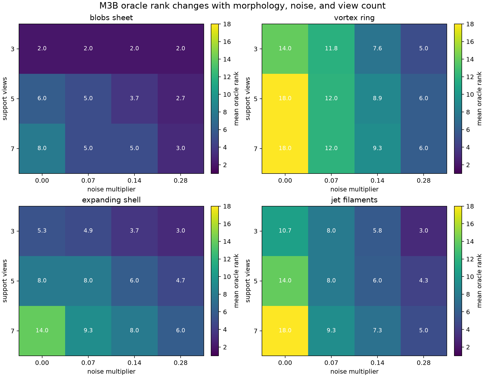
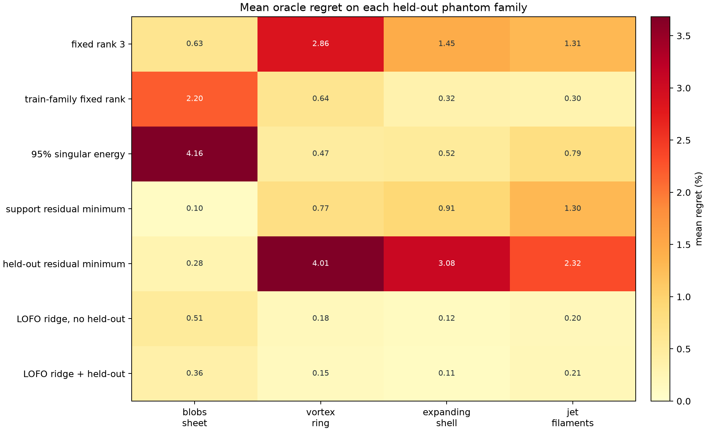
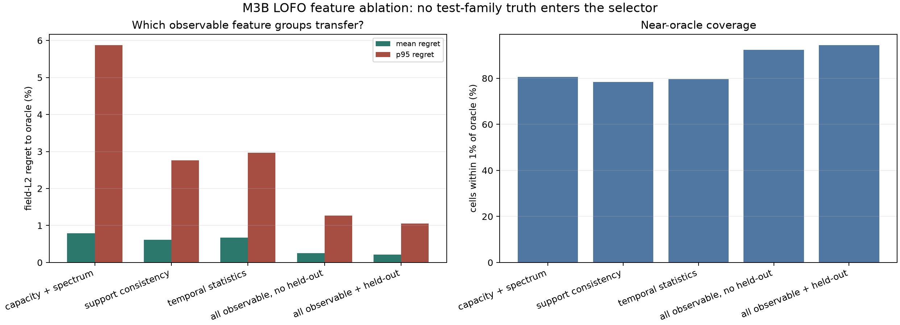
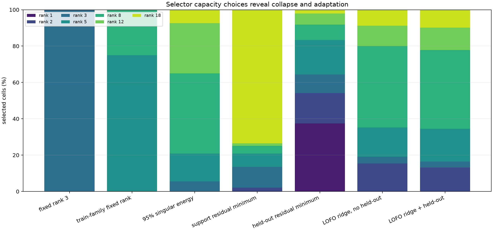
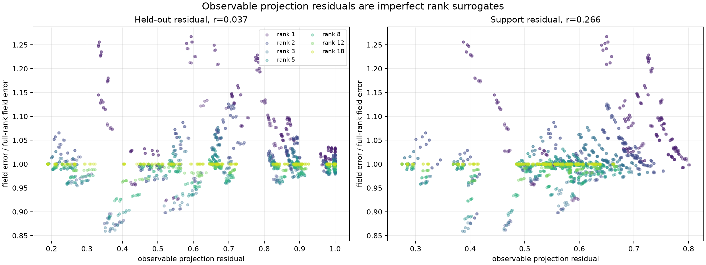

{kind=link}
{kind=link}
{kind=link}
{kind=link}
{kind=link}
可发表的最小增量
leave-one-geometry-out + real held-out view，证明 selector 不只记住 synthetic morphology。
上一轮证明固定 rank 会随 noise、views 和 dynamics 失效；这一轮再去掉两个捷径：不再只用一个 phantom，也不允许测试时看 field truth。四种三维形态整类留出，selector 只能依据奇异谱、support 数据一致性和时序物理统计决定压缩容量，并允许选择 full rank 拒绝平滑。
真正有效的不是“用一台 held-out 相机选 rank”，而是多种可观测证据的互补。 固定 rank 3 的 mean/p95 oracle regret 为 1.561%/5.635%；LOFO selector 不用 held-out view 时降到 0.252%/1.267%，加入 held-out 后为 0.210%/1.054%。反而直接最小化 held-out residual 会恶化到 2.423%/9.467%。因此 held-out residual 只能作为风险特征，不能冒充 field quality。
六类 synthetic angular layout 的 nested leave-one-geometry-out 已扩展到 1,728 observation cells 与 12,096 rank candidates。无 held-out selector mean/p95 regret 为 0.273%/1.196%，93.81% 单元在 oracle 1% 内；morphology/dynamics/noise 比 geometry 更主导剩余失败。combined UQ 失效，prediction std 可筛风险，但 full-rank fallback 会恶化系统风险。
不使用 held-out camera 的 LOFO ridge 已在 92.4% 观测格进入 oracle 1% 范围，并在 77.8% 格子优于固定 rank 3。加入 held-out 后覆盖率为 94.4%，收益存在但不是决定性。
下一步：把 ridge 替换成带不确定度和拒答的容量控制头，并做 leave-one-geometry-out。






| 层级 | 允许使用 | 禁止使用 | 验证证据 |
|---|---|---|---|
| 外层 LOFO | 其余 3 个 family 的全部候选与 field truth，用于训练。 | 被留出的 morphology family 的任意标签或真值。 | JSON 对每个 fold 明列 heldout_family、training_families 和训练行数。 |
| 内层调参 | 训练 family 之间再做 leave-one-family-out，选择 ridge lambda。 | 外层测试 family 的 selector regret。 | 每个 lambda 的 inner-LOFO mean regret 全部保留。 |
| 测试时特征 | rank、奇异谱、support residual、时序导数、mass 曲率、负值比例、view count、观测高频 proxy。 | family、dynamics、noise label、field L2、oracle rank、target。 | 脚本启动时硬检查 forbidden features；独立 validator 再检查每个模型。 |
| 离线评价 | field truth 只计算 oracle、regret 和 failure cell。 | 把 oracle rank 当成真实部署规则。 | 6,048 行候选表保留 full-rank 对照和逐格 oracle 一致性。 |
| Selector | Mean regret | P95 | 1% 内覆盖 | 相对 rank 3 | 判断 |
|---|---|---|---|---|---|
| 固定 rank 3 | 1.561% | 5.635% | 53.8% | 基线 | 跨 morphology 不稳。 |
| 训练 family 固定 rank | 0.865% | 5.878% | 77.1% | +0.658% | 均值改善，但 blobs-sheet 尾部失效。 |
| 95% singular energy | 1.484% | 10.593% | 66.6% | +0.033% | 能量阈值不能代表 field task。 |
| Support residual minimum | 0.770% | 3.669% | 78.4% | +0.748% | 多数格退化为 full rank，仍缺容量代价。 |
| Held-out residual minimum | 2.423% | 9.467% | 47.3% | -0.880% | 不能单独当 field quality。 |
| LOFO，多特征，无 held-out | 0.252% | 1.267% | 92.4% | +1.259% | 当前最实用版本，不占用额外相机。 |
| LOFO，多特征 + held-out | 0.210% | 1.054% | 94.4% | +1.301% | 最佳，但额外收益只有 0.042 percentage point。 |
工作名 OCS-BOST 只用于讨论，不主张命名或方法原创性。创新点不能写成“用 ridge 选 rank”，而应落在 BOST 观测算子约束下的容量控制、可靠性和失败回退。
共享 tensor/operator backbone 输出 rank 2-full 的候选或嵌套 factors。
factor spectrum、support residual、时序导数、积分量和可选 held-out。
输出每个 rank 的风险分布，不只做一个硬分类。
低可识别度时回退 full rank，或保留多个候选。
只对高风险时刻做 per-instance physics refinement，控制算力。
leave-one-geometry-out + real held-out view，证明 selector 不只记住 synthetic morphology。
无 support physics、无 temporal traces、无 abstention、固定 capacity、oracle upper bound。
同一 4D 序列随视角/噪声自动切换容量，标出风险时刻，并展示 full-rank/NeRIF 回退。
blobs_sheet / transient / noise 0.07 / 5 views：no-held-out 常选 rank 2，oracle rank 5，最坏 regret 2.58%。
jet_filaments / chirp / noise 0.28 / 7 views：with-held-out 选 rank 12，oracle rank 5，最坏 regret 2.84%。
vortex_ring / chirp / noise 0 / 7 views：固定 rank 3 regret 7.67%，oracle 为 full rank 18。
M3B 的 selector 不应该停在 temporal SVD。它可以成为 T16 的时序升级层：静态 QC-SNCO 负责每帧三维重建与 query-camera 校准，M3B 的可观测容量头决定短窗 temporal operator / tensor factors 的复杂度。geometry/UQ 结果同时提醒：拒答后不能未经验证就切 full rank 或 NeRIF，fallback 必须重新算 system risk。
四类 morphology 都是人为 stress test；LOFO 只证明 synthetic morphology transfer。六个 seed 只改变观测噪声，不是六个独立流动工况。forward model 仍是 straight-ray stack，没有真实 calibration、curved ray、mask、同步误差、曝光模糊或 camera PSF。全局 affine field alignment 和 oracle rank 只用于离线评价，不能进入真实部署。